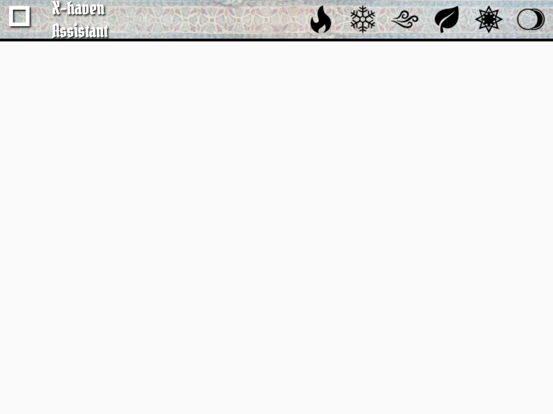
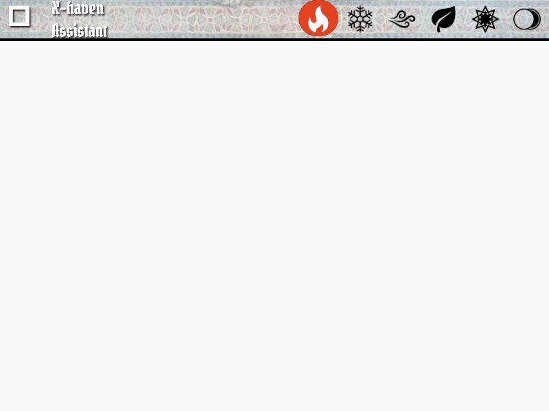
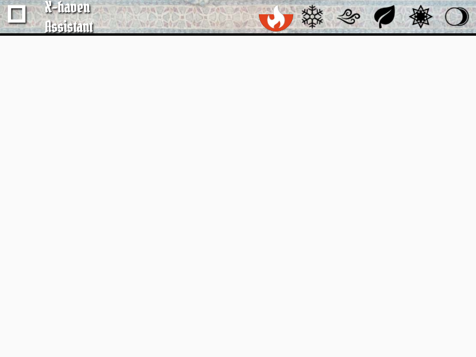
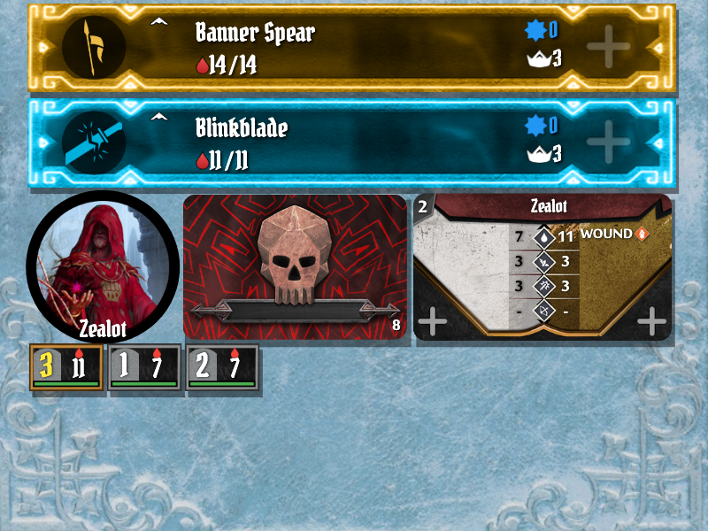
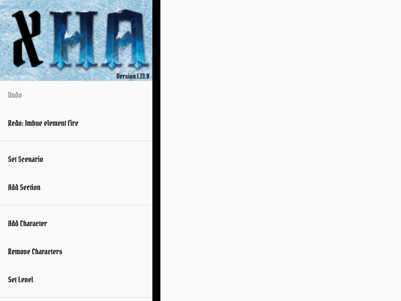
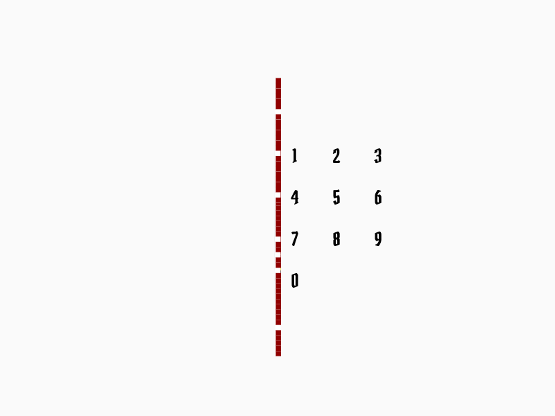

Status: draft. Anchored to upstream/main. Section numbers are stable identifiers — tests, bug reports, and forum threads can cite them as §X.Y. Goldens for §3 and §4 are generated from frosthaven_assistant/test/widget/manual_goldens_test.dart; regenerate with flutter test --update-goldens. The same goldens render byte-identically on the claude_refactor branch — they can serve as a regression check that the refactor preserves visible UI.
§1Welcome
§1.1What this app is
X-Haven Assistant is a companion app for Cephalofair's Gloomhaven, Frosthaven, and related games. It tracks the moving parts the rules ask you to track: monster initiative, hit points, conditions, attack modifier decks, elements, and round structure. It does not replace the rulebook, the cards, or the table — it removes bookkeeping so you can play.
§1.2What this manual is, and isn't
It is a guide to the app — what each screen shows, what each button does, how multiplayer works, how to recover from mistakes.
It is not a rulebook. Where game concepts come up (initiative, conditions, elements, etc.) we cite or briefly recap; we never replicate. The rulebook is the source of truth for what is true in the game; this manual is the source of truth for what is true in the app.
§1.3Supported editions
Gloomhaven 1E, Gloomhaven 2E, Frosthaven, Jaws of the Lion, Forgotten Circles, Crimson Scales, Trail of Ashes, and Seeker of Xorn. Differences between editions are summarized in §8.
§1.4Out of scope
The app does not track campaign progression (unlocked classes, prosperity, town records), character sheets (items, perks the character has bought), or battle goals. Those still live on paper or in a separate tracker.
§1.5How to read this manual
If you have never opened the app: start with §2 Quick Start. If you are partway through a session and stuck on something specific: jump to §5 A Round, Step by Step or §13 Reference Appendix. If you played Gloomhaven Helper before and want to know what changed: §8 Edition Differences and the per-section notes are where the deltas live.
Section numbers (e.g. §2.4) are stable references. Test reports, bug filings, and forum threads can cite them directly.
§2Quick Start: Your First Scenario (Black Barrow)
This chapter walks from "I just installed the app" to "we just finished round 1 of Gloomhaven Scenario 1." The example is Black Barrow with a single character: a level 1 Brute. Two starting rooms, two monster types, no special rules — small enough to walk end-to-end.
Why Black Barrow? Gloomhaven's rulebook also uses Scenario 1 to teach the game. Mirroring it here lets you read the manual and the rulebook side by side and see the same scenario from both angles — game rules from the rulebook, app behavior from this manual.
§2.1Install and launch
Install from the platform store (or build from source — see the project README). On first launch the app opens to an empty Main Screen: a top bar (elements), a near-empty body (the main list), and a bottom bar with round controls. The hamburger menu (≡) in the corner opens the sidebar drawer; that's where every menu lives.
§2.2Add your character
Open the sidebar (≡) → Add Character. Pick Brute. Set the level to 1. Confirm. The Brute now appears in the main list with a banner showing name, level, max HP, and an empty initiative slot.
§2.3Set the scenario
Open the sidebar → Set Scenario → Gloomhaven → 1: Black Barrow. The app auto-populates:
Bandit Guard — normal and elite ability decks
Bandit Archer — normal and elite ability decks
Scenario stat line in the bottom bar (level, trap damage, hazardous terrain damage, XP bonus, coin multiplier)
It does not place individual standees — those go on the table physically. The app tracks each standee once you tap to add it during play (see §2.6).
§2.4Round 1: draw monster abilities
Each player picks two cards from their hand (physical, on the table). When the group is ready, tap the Draw button in the bottom bar. The app reveals the top ability card for each active monster type — so you'll see the Bandit Guard's drawn card and the Bandit Archer's drawn card.
Test ref. The Draw button's behavior is implemented by DrawButton in lib/Layout/draw_button.dart. The same button morphs into "Next Round" when the round is over (see §2.7) — see also upstream issue #135 on the morphing-button race.
§2.5Round 1: set initiative
Each character's initiative is the lower of their two chosen cards. Tap the empty initiative slot under the Brute's banner. A numpad menu opens; enter the value. The main list reorders by initiative as soon as you confirm.
Each monster type's initiative is shown on its currently-drawn ability card and is set automatically — you do not enter monster initiative yourself.
§2.6Round 1: first combat exchange
Play in initiative order. When it is the Brute's turn:
Move the physical Brute mini on the map.
Resolve the attack physically (declare target, roll modifier deck, etc.).
In the app, tap the Bandit Guard standee menu — pick the standee number you attacked. The standee menu opens.
Tap the HP control to subtract damage.
If the modifier card you drew applies a condition (Wound, Poison, etc.), tap the condition icon in the same menu.
For the monster's turn: the ability card is already revealed (§2.4); resolve it physically against the targeted character; tap the character widget's HP control to apply damage.
§2.7Round end: Next Round
When all figures have acted and the round is over, the Draw button's label changes to Next Round. Tap it. The round counter advances; monster ability decks reshuffle if any drew a "shuffle" card; conditions decrement per the rules (Poison, Wound, etc., behave per the app's auto-expire setting — see §11).
Caveat — morphing button race. Because the same button serves Draw and Next Round, a stray double-tap at the moment the round ends can resolve as Draw → Next Round in quick succession. Issue #135 tracks this. If you see initiative reset unexpectedly, that's the cause; Undo (§10) reverses it.
§2.8What stays physical, what the app tracks
The app tracks: monster HP, character HP, conditions, initiative, round number, modifier deck state, elements, scenario stats. The table tracks: positions, line of sight, range, terrain, characters' chosen cards, items, loot in hand. Treat the app as a smart scoreboard, not a substitute for the map.
§2.9When to use Undo
Sidebar → Undo. Reverses the last app action: damage, condition, initiative entry, draws, round advance. Up to 250 levels deep. Use it freely — Undo is a recovery mechanism, not a confession.
That's enough to play round 1. §12 walks the rest of the scenario; §5 goes deeper on each round-step interaction.
§3The Main Screen
§3.1Anatomy
The main screen is a single Scaffold with four named regions, implemented by MainScaffold (lib/Layout/main_scaffold.dart):
Top bar — six element icons across the right; the menu icon (≡) on the far left; the title "X-haven Assistant" beside it. See §3.2.
Main list — the body. Characters and monster types stack vertically in initiative order. Empty until you add characters and set a scenario. See §3.3.
Bottom bar — the Draw / Next Round button, scenario stat icons (level / trap / hazardous / XP / coin), the level widget, network UI, and the attack modifier deck card. See §3.4.
Sidebar drawer — opened by tapping ≡. Catalog of every menu the app exposes (Set Scenario, Add Character, Settings, etc.). See §3.5.
Two transient overlays float over the body and don't have a fixed region:
Toasts — short status notifications that fade in and out (e.g., "Round end").
Modal menus — every "tap to open a menu" interaction (Add Character, Set Scenario, etc.) opens a dismissable dialog over the main screen rather than navigating.
Diagram pending. A full-screen annotated diagram of all four regions (with arrows pointing to each) belongs here. That requires a real-app integration screenshot rather than a widget-test golden — captured with flutter run -d macos + screencapture. Forthcoming once the integration_test harness is in place.
§3.2Top bar — elements
The top bar (TopBar, lib/Layout/top_bar.dart) houses the six element icons that the rules call out: fire, ice, air, earth, light, dark. Each element has three visual states:
Inert — element is not in play.
Full / strong — element is fully infused this round.
Waning / half — element is fading at the end of next round.
Tap an element to infuse it to full. Long-press to set it directly to waning (useful for the start-of-scenario element conditions some scenarios specify, and for Elementalist play). Tapping a full element again uses it (returns to inert). At round end, full elements decay to waning, and waning to inert (subject to the Elementalist's perk in Gloomhaven 2E).

All six elements inert — the default state at scenario start. From left: fire, ice, air, earth, light, dark.

Fire infused to full after a single tap.

Fire set to waning via long-press — note the half-filled circle.
Test ref. Goldens are produced by the Manual screenshots group in test/widget/manual_goldens_test.dart. Regenerate after UI changes: flutter test --update-goldens test/widget/manual_goldens_test.dart. Verify against goldens (no rewrite): omit --update-goldens.
§3.3Main list — initiative and figures
The body of the screen (MainList, lib/Layout/main_list.dart) is a vertically-scrolling list. Each entry is one figure or figure group:
Character banner — full-width horizontal banner per character. Shows the class icon, character name, level, current/max HP, XP, conditions, summons (if any), and an initiative slot. Color-coded per class.
Monster type widget — one per active monster type (e.g., "Bandit Guard"). Shows the type's portrait, the currently-drawn ability card, the stat card for current level, and one standee block per spawned standee, each with HP/conditions and a normal/elite indicator.
Objective / escort entries — represented as characters with a special class. See §6.1.
Reordering. When initiative is entered for all figures, the list re-sorts automatically. To reorder manually (e.g., for ties or scenario-specific overrides), long-press any entry and drag.

Main list with two characters (Banner Spear, Blinkblade — both level 3) and one monster type (Zealot, level 2) with three standees (two normal, one elite). Each character banner shows class color, name, level, current/max HP, and an initiative slot. The monster widget shows the type's portrait, ability-card area, stat card, and a row of standee blocks.Same widget on first launch — no characters, no scenario, just the textured background. Tapping §4.1 Add Character and §4.2 Set Scenario populates it.
§3.4Bottom bar — round, scenario, draw, AMD
The bottom bar (BottomBar, lib/Layout/bottom_bar.dart) holds the round-level controls. From left to right:
Draw / Next Round button — the morphing button described in §5.2 and §5.8. Reveals monster ability cards mid-round; advances the round when tapped at end of round. Cross-references the morphing-button caveat (issue #135).
Scenario stat line — five compact icons showing scenario-level (top-of-bar number), trap damage, hazardous terrain damage, XP bonus per kill, and coin multiplier. Auto-populated when a scenario is set; goes blank when none is set.
Level widget — the small numeric box showing scenario level. Tap it to adjust scenario level mid-game (custom difficulty); see §4.5.
Network UI — invisible 0×0 widget that owns network toast notifications. No visual footprint; only surfaces toasts when network state changes.
Modifier deck card — the right-edge card showing the top-of-deck for the monster attack modifier deck (or the current draw if a card is showing). Tappable for AMD interactions; see §5.6.
Bottom bar at scenario start. "Draw" button on the left, scenario stats in the middle (level 1, trap 3, hazardous 2, XP +6, coin x2), level widget showing 20, modifier deck card on the right.
§3.5Sidebar drawer
The sidebar drawer (MainMenu, lib/Layout/menus/main_menu.dart) is the catalog of everything you can do that isn't a tap on a banner or button. Open it by tapping ≡ in the top bar; close it by tapping outside or swiping it away.

Drawer in its default state. The "Redo: Imbue element fire" entry shows that Undo/Redo carry a description of the action they'd reverse.
From top to bottom, the drawer contains:
Header — "X-Haven Assistant" logo + version string.
Undo / Redo — labelled with the action they would reverse. Up to 250 levels deep. See §10.1.
Connect to Server / Start Host Server — network controls (with the local IPv6 address shown for the host case). See §9.
Documentation — opens the project README on GitHub in the system browser.
Donate (non-iOS only) — opens a Ko-fi link.
Exit (desktop only) — saves state and closes the window.
Items are visible/hidden based on game state and platform; for example, Loot Deck Menu only appears when a Frosthaven scenario is active, and Donate is suppressed on iOS to comply with App Store policy.
§3.6Common gestures
The app makes consistent use of a small set of gestures. Knowing these is enough to drive most of the UI:
Gesture
Where
What it does
Tap
Anywhere
The primary action — open a menu, increment a counter, infuse an element.
Long-press
Element icons
Sets the element to waning directly (skipping full).
Long-press
Main list entries
Picks up the entry to drag-reorder it manually.
Long-press
HP / counter buttons
Opens a numpad for direct numeric entry instead of single-step.
Double-tap
Ability cards, modifier cards, stat cards
Zooms the card to full-screen for inspection. Tap again to dismiss.
Drag
Initiative banners
Alternative initiative entry — drag to set an initiative without opening the numpad. (Setting controlled in §11.)
Tap outside
Open menu / drawer
Dismisses the menu without committing anything.
Gestures are intentionally minimal — there are no swipes-to-delete or pinch zooms. If a gesture isn't listed here, the app probably doesn't recognize it.
§3.7Icons and symbols
The app inherits its icon vocabulary from the rulebook. The full glossary is in §13.3; a brief tour of the high-frequency icons:
Elements — fire (flame), ice (snowflake), air (swirl), earth (leaf), light (radiating star), dark (crescent moon). Used in the top bar (§3.2) and on monster ability cards.
Conditions — small round tokens displayed under HP. Most common: Wound (drop with thorns), Poison (drop with skull), Stun (lightning), Disarm (broken sword), Immobilize (chains), Muddle (X), Strengthen (up arrow), Bless / Curse (modifier-deck symbols), Invisible (eye).
Scenario stats — five icons on the bottom bar (§3.4): scenario level, trap damage, hazardous terrain damage, XP bonus, coin multiplier.
Class icons — colored class glyphs on character banners and condition tokens. Each class has a unique color used as the banner background.
Standee colors — normal monsters use the muted stat-card color; elites use a yellow-bordered variant. Bosses and named monsters have unique frames.
Icons are rendered from PNGs in assets/images/; theme-specific variants (Gloomhaven vs Frosthaven) are picked at render time based on the active scenario edition.
§4Setting Up
§4.1Adding characters
Open the sidebar (§3.5) and tap Add Character. The menu (AddCharacterMenu, lib/Layout/menus/add_character_menu.dart) lists every character class the app knows about, sorted with the current campaign's classes first.
The Add Character menu. Each row is one class: colored class icon, class name, edition tag in parentheses. Top-of-list Escort and Objective are scenario-construct "characters" rather than playable classes (see §6.1). The ??? entry is a placeholder for a hidden/locked Frosthaven class — typing its name in the search field reveals it.
Tap a class to add it at level 1 with the default name. To pick a different starting level, the workflow is two steps: add the class, then use Set Level from the sidebar to change it (or tap the level on the character banner). Renaming a character is done by tapping the name on its banner; changes are local to the app and don't affect game state.
The Load or Save Characters header opens a separate menu for persisting characters across sessions — useful for ongoing campaigns where you want to keep the same Brute across scenarios without re-entering perks every time.
Starting HP edge cases. Some perks and items grant +max HP. The app starts characters at the class's stock max HP for the chosen level — if your character has perks bumping max HP, adjust on the banner via long-press on the HP control. Tracked at upstream issue #213.
§4.2Setting a scenario
Sidebar → Set Scenario. The menu (SelectScenarioMenu, lib/Layout/menus/select_scenario_menu.dart) has two parts:
Campaign picker at the top — switches between editions (Gloomhaven, Frosthaven, Jaws of the Lion, etc.). Switching campaign changes which scenarios appear in the list below; characters from other editions remain in the main list.
Scenario list — every scenario the picked campaign knows about, sorted by scenario number. The custom entry at the top is a blank scenario for ad-hoc setups.
Set Scenario menu, with the Jaws of the Lion campaign active. Each row is a scenario — tap to set it. The "Set Scenario" line just under the campaign picker is a numeric quick-jump (type a number to jump to that scenario).
What setting a scenario does. Auto-populates monster types in the main list (§3.3), the scenario stat line in the bottom bar (§3.4), and any scenario-specific reminders (§6.3). It does not place individual standees — those are added by tapping the monster widget's + control during play. Battle goals are also not tracked (kept on physical cards by design); PR #250 covers Buttons & Bugs single-character-mode considerations.
§4.3Adding monsters manually
Sidebar → Add Monsters. Distinct from §4.2 Set Scenario: Set Scenario auto-populates a fixed roster, while Add Monsters (AddMonsterMenu) adds an arbitrary monster type to the current main list.
Add Monsters menu. Filter checkboxes (top): Show Bosses, Show Scenario Special Monsters, Add as Ally. The "Add Monster" search field accepts a name fragment. The list below is filtered by the active edition shown in Show monsters from.
Use cases:
Custom scenarios. Building a one-off encounter outside any published scenario.
Mid-scenario reinforcements not from a section. Some scenario texts say "spawn an X" without an associated section card — add it manually here.
Allies. Toggle Add as Ally to add the monster on the character side (uses the allies AMD). Useful for special scenario figures controlled by the players.
Tapping a monster type adds it at the current scenario level. Standees for the new type are then added through the monster widget's + control.
§4.4Adding sections
Sidebar → Add Section. The menu (AddSectionMenu) lists the sections defined for the currently-set scenario that haven't yet been added. Use it when the scenario book reveals a section card mid-play — typically when a door is opened, a tile is unlocked, or a trigger fires.
Adding a section auto-spawns the section's monsters into the main list, applies any scenario rules listed for that section, and surfaces the section's reminders. Sections that introduce monsters of types already present add additional standees of that type rather than duplicating the monster widget.
Initiative timing. Per upstream issue #121, monsters added mid-round should be inserted into the existing initiative order using the section's drawn ability card, not skipped to next round. The app handles this when a section is added mid-round.
§4.5Custom difficulty
Difficulty adjustments come in three flavors, each at a different scope:
Scenario level (global) — tap the level widget on the bottom bar (§3.4). The Set Level menu (SetLevelMenu) lets you pick a level 0–7 and apply a difficulty offset (Easy −1, Normal 0, Hard +1, etc.). Affects every monster's stats simultaneously. The legend at the bottom of the menu shows the resulting numeric monster level for the chosen scenario level + difficulty.
Per-monster level — long-press a monster type's stat card to override its level. Useful for elite-only re-leveling, or for scenarios where the rules call out a single monster at a different level.
Per-monster max HP — same menu offers a max-HP override for one specific standee. House-rule territory; most groups never touch this.
The bottom-bar level widget is also where you'd set auto-level adjust (the app re-computes scenario level based on character levels) and solo mode (single-character scaling). These persist across scenarios and are stored in settings, not game state — they survive a fresh "Set Scenario."
§5A Round, Step by Step
The round structure mirrors the rulebook's: card selection (physical), drawing monster abilities, setting initiative, sorting and acting, ending the round. The app participates in steps 2–5; step 1 stays on the table.
§5.1Card selection (player phase)
Each player chooses two ability cards from their hand and places them face-down. The app does not enforce, track, or even know about the player's hand — card management is purely physical. The app's role begins once the group is ready to draw.
What this means in practice: there is no "submit cards" or "ready" interaction in the app. Just play physically and tap Draw when everyone is ready.
§5.2Drawing monster abilities
Tap the Draw button on the bottom bar (§3.4). The button is implemented by DrawButton in lib/Layout/draw_button.dart.
What happens on Draw:
Every active monster type's ability deck reveals its top card. The card appears in the monster widget on the main list.
The round state moves from chooseInitiative to playTurns (visible internally; affects the button's label, see below).
The button's label morphs from Draw to Next Round.
The round counter on the button face shows the current round number; in scenarios with a fixed round count, it reads as 3(8) meaning round 3 of 8.
If you tap Draw when the round state isn't ready (e.g., already in playTurns), the button's runAction returns a "blocked" message that surfaces as a toast — no state change.
§5.3Setting initiative
Each character's initiative is the lower of their two chosen cards (rules-side). To enter it in the app: tap the empty initiative slot under the character's banner. A numpad menu opens.

Initiative numpad. Two-digit max — entering a second digit auto-confirms and dismisses. Useful for typing 7 + 4 to mean "74" without a confirm tap. The vertical red line is the menu's modal-dismiss affordance.
Alternative entry: drag-on-banner. If Soft numpad is disabled in settings (§11), tapping the initiative slot enters drag-mode on the banner — drag horizontally to scrub through values. Power users with a lot of characters often prefer this.
Monster initiatives are not entered manually — they're set automatically from the drawn ability card's printed initiative.
Secret initiative (network play). When connected to a server (§9), client characters' initiatives can be hidden from other clients until the round resolves. The rule has an edge case: modifying an already-entered initiative reveals it to other clients (otherwise mid-round adjustments would leak the value).
§5.4Sorting and acting
Once all figures have an initiative (characters from the numpad, monsters from their drawn cards), the main list reorders by initiative ascending — lowest first. Ties break by figure type per the rulebook; the app respects this automatically.
Reading the list: the topmost figure with no acted indicator is who acts next. As each figure resolves their turn, tap their banner's banner-icon corner — the icon shifts to acted state, and the next figure is highlighted as up next.
Manual reorder. For ties or scenario-specific overrides, long-press a banner and drag to a new position. This bypasses initiative ordering and is local to the current round only — the next round's draw resets the order.
§5.5During a turn
The app's job during a turn is to track HP, conditions, XP, and summons. Everything else (movement, attacks, line-of-sight, range) stays on the table.
Character widget
The character banner (CharacterWidget, lib/Layout/CharacterWidget/) exposes:
HP control — tap to subtract one (most common), long-press to open a numpad for direct entry. Healing: add via the same control.
Conditions row — tap a condition icon to toggle. Conditions render as small round tokens under HP; the icon set is the rulebook's. See §3.7 for the glyph vocabulary.
XP counter — small star widget. Tap to increment.
Summons (+) — adds a summon figure tracked under the character. Summons get their own HP / conditions / initiative.
Acted indicator — small banner-icon in the corner; tap when the character finishes acting.
Monster standee menu
Each monster standee on the monster widget is its own tappable target. Tapping a standee opens its status menu with HP control, conditions, and a level pip. Promotion (e.g., from normal to elite mid-scenario) happens here — though the rules rarely call for it.
If a monster's HP reaches 0, the standee is automatically removed from the list. The character equivalent (HP 0) leaves the banner in the list as exhausted — physically you remove the character from the table, but the banner stays so the app retains the position for end-of-scenario XP/coin computation.
§5.6Modifier decks (AMD)
Each monster faction has its own attack modifier deck. Each character also has their own. The app tracks all of them.
Monster AMD — single deck shared by all monsters and bosses (per rulebook). Visible on the bottom bar (§3.4) and inline above the bottom bar.
Character AMDs — one per character, with their personally-purchased perks applied. Visible above each character's banner area on screens wide enough to fit, or accessible via the character widget.
Allies AMD — appears when at least one allied figure is present (see §4.3 Add as Ally). Its visibility is also toggleable from the sidebar drawer.
Drawing. Tap the deck to draw the next card. The drawn card persists until the figure's turn ends; tap the deck again to advance. Special cards (Curse, Bless, +2/Stun, etc.) have their effects applied automatically when drawn — Bless/Curse are removed from the deck after one use; +2/anything resolves as the modifier plus the named condition. Rolling cards (the rolling-modifier symbol) chain visually as a small stack.
Discard / shuffle. Cards drawn during a round stay in the discard pile. At the end of the round the deck doesn't shuffle automatically — only specific cards (the shuffle-trigger card, or special abilities) cause a shuffle. The app handles all of this automatically.
Advantage / disadvantage. Long-press the deck to draw two cards instead of one; the rules-relevant one (per advantage/disadvantage) is highlighted. Single-tap dismisses both.
Perks. Configured in the perks menu off the character widget. Each perk you check applies its modification to the AMD: removing −1s, replacing −2s with rolling cards, adding +2 Wound, etc. Perks persist with the character via the character save/load system (§4.1).
§5.7Elements
See §3.2 for the visual states. During a round, elements move through their lifecycle automatically:
Tap an inert element → full.
Tap a full element → inert (a "use" — typically when an ability consumes the element).
Long-press an inert element → waning (rare; for scenario-start element conditions).
At round end (when Next Round is tapped, see §5.8), the cycle decays: full → waning → inert.
The Elementalist class (Gloomhaven 2E) has perks that change the decay behavior — the app handles this automatically when an Elementalist is in the party with the relevant perk checked.
§5.8Ending a turn / round
A turn ends when the figure has resolved their action and you've tapped the acted indicator on their banner. The round ends when every figure has acted.
To advance to the next round, tap the (now-relabelled) Next Round button on the bottom bar. What happens:
Round counter increments.
Element states decay one step.
Auto-expire conditions decrement (Wound deals damage; Poison stays through draws but expires per rules; Stun/Disarm/Immobilize/Muddle expire at round end if Auto-expire conditions is enabled in settings).
Acted indicators reset; banners go back to "ready to act."
Draws are not automatic — you tap Draw again to start the next round (so the button morphs back to Draw).
Caveat — morphing button race (#135). Because the same button serves Draw and Next Round, a stray double-tap at the boundary can resolve as Next Round → Draw in quick succession, advancing the round and immediately drawing for the next. The visible symptom is initiative resetting unexpectedly. Recovery: Undo twice (§10.1). Local UI debounce is the appropriate fix; the multi-client manifestation is already handled by the protocol's commandIndex dedup at server.dart:65–92.
§6Special Scenario Mechanics
Beyond the core round loop, scenarios introduce mechanics the app handles in special ways. This section catalogs them.
§6.1Objectives and escorts
Objectives ("destroy the artifact," "protect the prisoner," "open the gate") and escorts ("the alchemist follows the party") are represented as characters in the main list rather than monsters. They use the Objective and Escort classes from the na (not-applicable) edition (§4.1).
Why characters and not monsters? Because they need an initiative slot, an HP bar, and conditions — exactly the character widget's affordances — but they don't draw modifier cards from the player AMDs and they don't earn XP. The na edition's classes provide that "character minus AMD/XP" shape.
HP and initiative for objectives/escorts are typically dictated by the scenario book — set them via the character widget on add, or via Set Level. GameMethods.isObjectiveOrEscort is the predicate the app uses to special-case their behavior throughout the codebase.
§6.2Allies
Allies are NPC figures controlled by the players that act on their initiative. Mechanically they're monsters (with monster ability cards), but they fight on the players' side and use a separate allies attack modifier deck (a copy of the basic monster AMD without curses).
Add an ally either by toggling Add as Ally in the Add Monsters menu (§4.3) when adding the figure, or by promoting an existing monster type via the sidebar drawer's Show Ally Attack Modifier Deck toggle (§3.5) when the scenario brings allies into play mid-game.
Allies turn the second AMD card on the bottom bar visible. When no allies are active, the deck is hidden to keep the bar uncluttered.
§6.3Timers and reminders
Some scenarios specify start-of-round, mid-round, or end-of-round reminders ("at the start of round 3, spawn an Earth Demon"; "at the end of any round in which the artifact has been destroyed, the scenario ends"). The app surfaces these as toast notifications at the relevant moment, sourced from the scenario's data file.
Reminder visibility is controlled by the Show Reminders setting (§11). Default on. They auto-dismiss after a few seconds; tap to dismiss early.
§6.4Spawns
Spawns come in two flavors:
Section-driven spawns. When you reveal a section via Add Section (§4.4), the section's monster list is added to the main list automatically. This is the common case.
Auto-spawn (room reveal). When Auto-add spawns is enabled in settings (§11), the app prompts to add the next section's monsters when triggers fire. The trigger surfaces as a dialog (AutoAddStandeeMenu) over the main screen — confirm to add, or dismiss to skip.
For one-off spawns not covered by sections (e.g., a scenario rule that says "spawn a Bandit Guard adjacent to the leader"), use Add Monsters for a new type or just tap + on an existing monster widget for an additional standee.
§6.5Named and boss monsters
Bosses (MonsterType.boss) differ from normal/elite monsters in three ways:
Custom ability deck. Bosses have their own ability cards rather than drawing from the type-shared deck.
Higher HP scaling. Boss HP scales differently with scenario level (per the rulebook); the app's stat tables encode this.
Single standee. Bosses are typically unique — one standee, no normal/elite variants.
Named monsters (e.g., specific characters that aren't bosses but aren't generic enemies either) follow the boss code path with a unique frame style. The Add Monsters menu's Show Bosses filter (§4.3) toggles their visibility in the picker.
§6.6Standee limits
Each monster type has a hard cap on simultaneously-active standees (typically 6 normal + 4 elite, varying by edition). The app enforces this: tapping + on a fully-spawned monster type refuses the add and surfaces a toast naming the limit.
If the rules ever call for exceeding the limit (rare; usually only via specific scenario rules), the workaround is to remove an existing standee first. The app does not yet provide a "force-add over limit" affordance — file a feature request if your scenario needs one.
§7Frosthaven Specifics
Frosthaven adds mechanics that don't exist in Gloomhaven. The app handles them only when a Frosthaven scenario is active.
§7.1Loot deck
Frosthaven's loot deck replaces Gloomhaven's coin tokens with a deck of cards covering money, materials (lumber, hide, metal), and herbs (arrowvine, axenut, corpsecap, flamefruit, rockroot, snowthistle).
The app composes the loot deck automatically from character count: each player adds a fixed contribution of money cards, plus material and herb cards based on the scenario's loot pool. The full composition is visible via Loot Deck Menu on the sidebar (§3.5) — only present when a Frosthaven scenario is active.
Drawing. When a character looses (per the rulebook's looting rules), tap their character widget's loot affordance to draw the top card. The card is attributed to that character — at scenario end the app totals each character's hauls. Looting from a hex with a specific resource type (e.g., "loot 1 lumber") draws from the deck filtered to that resource.
Enhancement. Loot enhancements (cards that add +1 to a resource type, etc.) are configured in the loot deck menu via LootCardEnhancementMenu. Enhancements persist with the character's saved data — load a character into a future scenario and their enhancements come along.
Persistence. Money cards in particular: the app retains running totals so you don't have to re-enter wallet contents between scenarios. This is the loot deck's most quality-of-life-positive feature in Frosthaven play.
§7.2Sanctuary deck
The sanctuary deck (Crimson Scales / Trail of Ashes territory; Frosthaven uses a related mechanic) tracks favors and donations made to the Sanctuary of the Great Oak. The app exposes it as a separate deck reachable from the modifier deck menu when a relevant scenario is active.
The most common interaction is the donate command (DonateCsSanctuaryCommand) — a player donates 10 gold during a town visit, drawing a card from the sanctuary deck. The card's effect (typically a permanent buff or modifier-deck change for the next scenario) is recorded against the donating character.
This deck is not present in vanilla Gloomhaven or Jaws of the Lion campaigns; switching to those campaigns hides the deck entirely.
§7.3Buttons & Bugs differences
Buttons & Bugs (a Frosthaven solo expansion) plays as a single-character variant. The app detects Buttons & Bugs scenarios via an isButtonsAndBugs check in lib/Layout/main_scaffold.dart and adjusts the layout:
Modifier deck position. The on-bar attack modifier deck is suppressed when in Buttons & Bugs mode; the deck appears inline with the single character instead.
Battle goals hidden by default. Buttons & Bugs scenarios hide the battle-goal interaction the app surfaces in other modes — PR #250 covers the scope.
Single-character scaling. Solo mode (§4.5) re-scales monster HP/damage for the one-character party size automatically.
If you're running a multi-character Frosthaven campaign and accidentally pick a Buttons & Bugs scenario, the layout shift is the most obvious tell — switch back via Set Scenario (§4.2).
§8Edition Differences
The app supports many editions, each with its own scenario set, monsters, and quirks. Edition data lives in assets/data/editions/<Edition>.json; switching editions via the campaign picker (§4.2) loads its data into the active model.
§8.1Supported editions
Edition
Type
Notes
Gloomhaven
Base game (1E)
The original. All scenarios, monsters, classes from the 1E box.
Gloomhaven 2nd Edition
Base game (2E)
Reprint with rebalanced stats and revised monster ability decks. Elementalist's element-decay perk behaves differently here (see §5.7).
Forgotten Circles
Gloomhaven expansion
Adds the Diviner class, new scenarios, and a few new monster types.
The big one. Loot deck (§7.1), sanctuary mechanic, character classes that don't appear in Gloomhaven. Theme switches to the Frosthaven background and stats apply Frosthaven-specific condition variants where they differ.
Crimson Scales
Fan-made (officially endorsed)
Adds new classes and scenarios in a Gloomhaven-compatible shell. Sanctuary deck originates here.
Trail of Ashes
Crimson Scales follow-up
Continuation of Crimson Scales' campaign + classes.
Catch-all for community campaigns and assets registered under the umbrella.
§8.2What every edition shares
The core round flow (§5), elements (§5.7), AMDs (§5.6), and condition mechanics work identically across editions. The Save/Load Characters facility (§4.1) is also edition-agnostic — load a Brute (Gloomhaven) into a Crimson Scales scenario and the app will accept it.
§8.3Edition-specific behaviors
Loot deck — Frosthaven only (§7.1). Other editions don't surface the Loot Deck Menu.
Sanctuary deck — Crimson Scales / Trail of Ashes / Frosthaven (§7.2). Hidden in others.
Theme switching — Gloomhaven uses the Pirata-styled marble theme; Frosthaven uses the GermaniaOne-styled icy theme. Switching campaigns swaps the active ThemeData via ThemeSwitcher (lib/Resource/theme_switcher.dart). Manual override available in settings (§11).
Condition glyph variants — some conditions use slightly different art in Frosthaven vs. Gloomhaven (the _fh suffix on icon paths in condition_icon.dart). The app picks the correct variant based on the active scenario edition.
Battle goals — not tracked by the app in any edition; kept on physical cards. PR #250 covers Buttons & Bugs's hidden-by-default behavior.
§8.4Mixing editions in one party
The app permits a Banner Spear (Frosthaven), a Hatchet (Jaws of the Lion), and a Diviner (Forgotten Circles) in the same scenario. The Add Character menu (§4.1) sorts the active campaign's classes first but doesn't restrict by edition. Whether mixing makes game sense is a house-rule decision; the app stays out of it.
§9Multiplayer
The app supports a host/client model for sharing game state across multiple devices around the table. One device hosts; others connect as clients. The host's state is authoritative.
§9.1Hosting
Sidebar drawer → Start Host Server. The menu entry shows the local IPv6 address in parentheses (e.g., Start Host Server (fe80::abc:1234)) so clients on the same LAN know what address to type.
Once started, the entry's label changes to Stop Server. The server listens on a fixed port; the address shown is the one to share. Server lifecycle is implemented in lib/services/network/server.dart; the standalone variant lives in frosthaven_assistant_server/lib/standalone_server.dart for headless hosts.
Caveats. Hosting from a phone over cellular usually doesn't work — most carriers block inbound connections. LAN hosting from a desktop is the most reliable; LAN hosting from a tablet is fine if it stays awake (consider the Wakelock setting on Android, which is on by default for this reason). Port forwarding is required for hosting across the public internet — most groups don't bother.
§9.2Joining
Sidebar drawer → Connect to Server <address>. The address shown is the last successfully-connected one; type a new one to override. On successful connect, the server's full state is pushed to the client and replaces whatever was there locally.
The first connect of a session reads from the server; subsequent commands flow bidirectionally. Both host and clients can issue commands — the server arbitrates ordering via command index (see §9.5).
§9.3What's synced, what isn't
State
Synced?
Characters, monsters, standees, HP, conditions, initiative, round, modifier decks, elements
Yes (this is "game state")
Loot deck contents, character loot, sanctuary state
Yes
Undo / Redo history
Yes
Settings (theme, scaling, soft numpad, etc.)
No — local per device
Saved characters / character library
No — local per device
Network connection state (last-known address)
No — local per device
The split is intentional: settings are per-user preferences (one player likes dark mode, another doesn't); game state is per-table.
§9.4Disconnect behavior
If a client loses connection (Wi-Fi drop, app backgrounded, host quits), the app surfaces an "error / disconnected / lost" toast via NetworkUI (§3.4) with a Retry option. Tapping retry re-establishes the connection using the last known address.
Mobile clients backgrounded for too long may have their connection torn down by the OS. On foregrounding, the toast surfaces and the user can retry. Auto-reconnect on Settings (§11) attempts a reconnect automatically when the app returns to the foreground.
Host disconnect (host kills the app or loses power) is not graceful — clients will receive disconnect notifications. The host's state is preserved on its device; bringing the host back up and reconnecting clients restores the session at the last persisted command index.
§9.5Conflict resolution
Every command (HP change, condition toggle, draw, etc.) is tagged with a monotonic command index. The server is the source of truth for the index; clients submit commands relative to the server's current index.
The dedup logic lives in frosthaven_assistant/lib/services/network/server.dart (lines 91–117): if an incoming message's index is greater than the server's current index, it advances and broadcasts; if equal or lower, the message is logged and ignored. This is what protects the system from the most common multi-client races, including the morphing-button concern from issue #135 — two near-simultaneous Next Round commands from different clients hit the server with the same index, and only the first lands.
Out-of-sync notification. If a client's local state diverges from the server (typically because of a missed broadcast), the next command issued will be rejected and a toast surfaces ("out of sync — reconnect"). Reconnecting fetches the server's authoritative state and replaces local.
§9.6Initiative secrecy
The classic Gloomhaven simultaneous-reveal moment: each player chooses cards in secret, initiative is revealed at the same time. The app supports this in network play by hiding initiative values from other clients until all characters' initiatives are entered. Then all initiatives reveal simultaneously when the round transitions to playTurns.
Edge case: modifying initiative. Once a value has been entered and the round is still in chooseInitiative, the entering client can change their value — but the change broadcasts immediately (with the new value), revealing it to other clients. This is intentional: a hidden modification could let a player change their initiative after seeing others', which is a cheating vector. The reveal-on-modify behavior closes the loophole.
Initiative secrecy is configurable per-table; if your group plays open initiative, the setting in §11 exposes values immediately on entry.
§10Mistakes, Undo, and Customization
§10.1Undo and redo
Two-thirds of the moves you make in this app are recoverable. Sidebar drawer → Undo reverses the last command. The drawer entry shows what would be undone (e.g., Undo: Imbue element fire), so you can confirm before tapping. Redo replays it.
What gets undone:
HP / condition / XP changes on characters and monsters
Standee adds / removes
Element imbue / use
Initiative entries
Modifier deck draws
Round advances
Adding / removing characters and monsters
Setting a scenario / adding a section
What does not get undone:
Settings. Toggling dark mode, scaling, or any other Settings menu item is local-only and not recorded as a command.
Network connection state. Connect/disconnect doesn't roll back through Undo.
Saved-character library. Loading or saving a character writes to local storage outside the command stream.
The undo stack is unbounded in practice (limited by available memory). After hundreds of commands in a session, you can still wind all the way back to scenario start — useful for "wait, what was the HP before that crit?" forensic reconstruction. Undo persists across saves, so closing and reopening the app preserves your history.
§10.2If something looks wrong with the data
The app's data files (monster ability decks, scenario rosters, class stats) are hand-curated from the rulebooks. With thousands of stat-card numbers and ability cards, occasional mistakes are inevitable.
In the meantime, work around using Custom Difficulty (§4.5) — override the specific stat for the affected standee.
Data fixes are easy contributions. The JSON files are at frosthaven_assistant/assets/data/editions/<Edition>.json if you want to PR a fix yourself.
§10.3House rules
The app supports a few common house rules out of the box:
Open initiative. Settings → disable initiative secrecy (§9.6). Now initiatives are visible to all clients as soon as they're entered.
Auto-expire conditions. Settings → Auto-expire conditions. With this on, end-of-round Wound/Poison/Stun/Disarm/Immobilize/Muddle expire automatically per the rulebook. Off means you decide when to clear them — useful for groups that interpret edge cases differently.
Custom monster HP. Long-press a stat card → set max HP. House-rule territory; rare.
Custom scenario level. The level widget on the bottom bar offers a difficulty offset (§4.5). Easy / Hard / etc. are scenario-level adjustments.
No standees mode. Settings → No standees. Hides standee numbers throughout — for groups that don't use the physical standees and just track total HP per type.
House rules that the app doesn't support directly (e.g., custom modifier-deck composition) typically need a manual workaround using the Add Monster + perks system, or a feature request.
§11Settings Reference
Sidebar drawer → Settings opens the settings menu (SettingsMenu, lib/Layout/menus/settings_menu.dart). The README enumerates every option; this section covers the ones that materially change app behavior, grouped by intent.
§11.1Display and layout
Dark mode. Switches the bar backgrounds and overall palette to a darker variant. Independent of Frosthaven theme.
Bar scaling slider. Resizes the top and bottom bars. Useful on tablets where the default is too small. The corresponding userScalingBars value listenable cascades to most widget sizes.
Main scaling slider. Resizes the main list (banners + monster widgets). Set independently from bar scaling.
Fullscreen (desktop only). Hides the OS title bar; useful for game-day setups.
Stat card text shimmers. Cosmetic — animates monster ability text. Off by default to reduce visual noise; some find it festive.
§11.2Round-flow behavior
Soft numpad for input. When on, tapping initiative slots opens the numpad (§5.3). When off, the slot enters drag-on-banner mode instead.
Don't ask for initiative. Skips the initiative-entry step entirely; useful for groups using a separate initiative tool or playing with always-open initiative.
Expire Conditions. See §10.3 — auto-decrements end-of-round conditions per the rulebook.
Auto Add Standees. Triggers the auto-spawn dialog (§6.4) when sections introduce monsters.
Auto Add Timed Spawns. Same idea but for scenarios with time-based (round-N) spawns rather than section-based.
Random Standees. Randomizes which standee number is added rather than picking the lowest available. Tabletop-style draw-from-bag emulation.
§11.3Display filters and content
Don't track Standees / No Standees mode. Hides standee numbers and presents monster types as aggregate HP pools (§10.3).
No Calculations. Disables the auto-applied modifier-card math; players resolve attack modifiers manually. Used by groups who prefer to do the math themselves.
Hide Loot Deck. Hides the Frosthaven loot-deck UI even on Frosthaven scenarios. For groups who want to track loot by hand.
Show Scenario names in list. Adds the scenario name to the title; useful when running multiple groups.
Show Battle Goal Reminder. Surfaces a battle-goal toast at scenario start.
Show Attack Modifier Decks. Toggles AMD visibility globally.
Show Custom Content. Enables fan-made content (Crimson Scales, Trail of Ashes, Seeker of Xorn, CCUG editions). Off by default for cleanliness.
Unlock specials. Reveals the hidden Frosthaven character classes (those that show as ??? in §4.1).
§11.4Networking
Network-related settings (auto-reconnect, last-known address, server toggle) live in this menu but are documented in §9. The settings menu also surfaces the connection state via a checkbox row.
§11.5State management
Load/Save State. Save the entire current game state to a file (or load from one). Useful for moving a session between devices, sharing a problem state for bug reports, or resuming a paused scenario weeks later.
§12Walkthrough: Black Barrow Round-by-Round
This is the long-form companion to §2 Quick Start. Where Quick Start gets you to "we just finished round 1," this section walks the entire scenario end-to-end. Read it the night before your first session — or 30 minutes before, if that's how the schedule worked out.
The example: Black Barrow (Gloomhaven Scenario 1). One character, a level 1 Brute. Two rooms separated by a door. Two monster types: Bandit Guard (melee) and Bandit Archer (ranged). No special rules. The smallest possible Gloomhaven scenario, and the one the rulebook itself uses to teach the game.
§12.1Setup phase
Open the app. Sidebar (≡) → Add Character. Pick Brute (Gloomhaven). Confirm at level 1. The Brute appears in the main list as a yellow-orange banner showing class icon, name, level 1, HP 8/8 (the Brute's level-1 max), and an empty initiative slot.
Sidebar → Set Scenario. Confirm campaign is Gloomhaven; if not, tap the campaign picker to switch. Find #1 Black Barrow (it's at the top of the scenario list since they're sorted by number). Tap it.
The app now shows:
Bandit Guard normal & elite ability decks ready
Bandit Archer normal & elite ability decks ready
Scenario stat line in the bottom bar (level 1, the trap and hazardous values for level 1, etc.)
Place your physical Brute miniature on the starting hex. Place the Bandit standees per the scenario book (the rulebook tells you how many of each). The app and the table are now in sync — the app knows the monster types, the table knows the positions.
§12.2Round 1 — the initial room
Card selection. Look at your hand of Brute cards. Pick two. The lower of their initiatives is your initiative this round. Place the cards face-down on the table — the app doesn't know or care about your cards.
Draw. Tap Draw on the bottom bar. Bandit Guard and Bandit Archer ability cards reveal in their respective monster widgets. Each card has its own initiative printed on it.
Set initiative. Tap the empty slot under the Brute's banner. Numpad opens. Type your initiative (e.g., 21). The list reorders.
Resolve turns in initiative order. Suppose the order ends up: Bandit Archer (init 18), Brute (init 21), Bandit Guard (init 28). Then:
Bandit Archer. Per its drawn ability card (e.g., "Attack 2, Range 3"), each Archer standee makes a ranged attack. Resolve physically: pick targets, draw a monster AMD card per attack, apply damage. Tap your character widget's HP control to subtract damage; tap the AMD card to advance to next draw if the rules require multiple draws this turn.
Brute. Move and attack per your chosen cards. Decide your target (let's say Archer #1). Resolve the attack: declare base damage from your card, draw a Brute AMD card, apply the modifier. Tap Archer #1's standee, then the HP control to subtract damage. If the modifier card had a condition (e.g., +1 Wound), tap the condition icon in the standee menu.
Bandit Guard. Per its drawn card (e.g., "Move 2, Attack 2"), each Guard standee moves and attacks. Resolve physically; apply damage to the Brute via the character widget.
End of round. Each figure should now show as acted. Tap the Next Round button (the same button that said Draw before). Round counter advances; element decay happens automatically (none in play yet); auto-expire conditions tick.
Quick recovery. Made a mistake? Sidebar → Undo. Each undo reverses one command. Three taps wind back three actions; six taps wind back six. You can wind all the way back to scenario start if needed.
§12.3Round 2 — opening the door
Suppose your Round 1 left a Bandit Guard adjacent to the closed door. On round 2, you decide to step adjacent and open it (a free action per Gloomhaven rules).
In the app: sidebar → Add Section. The menu lists the sections defined for Black Barrow that haven't been added yet. Tap the section the rulebook says is behind that door (typically labeled by a letter or color in the scenario book). The app spawns the new monsters into the main list.
If Auto Add Standees is enabled in settings (§11), a confirmation dialog appears with the new section's monster list — confirm to add. Otherwise the section's monsters appear immediately.
Per upstream issue #121, mid-round-added monsters insert into the existing initiative order using the section's drawn ability card, not the next round. The app handles this automatically.
§12.4Mid-scenario complications
Several things will go sideways during the scenario; the app's affordances cover most:
Brute gets Wounded. Tap the Brute's banner → tap the Wound condition icon. At end of round, with Expire Conditions enabled, Wound deals 1 damage and stays for one more round.
Brute reaches HP 0. Exhausted. The character stays in the main list (so end-of-scenario calculations can run) but is functionally dead. Physically remove the mini.
You tapped the wrong condition by accident. Sidebar → Undo. The condition reverts.
Modifier card was a "shuffle" trigger. The deck shuffles automatically at end of round (§5.6). No action needed.
You forgot to set initiative for a player. The list will be in chooseInitiative state — visible because the round counter on the button still says current round and the button still says Draw. Enter the missing initiative, list reorders.
§12.5End of scenario
Black Barrow ends when all bandits are defeated (per the rulebook). Once the last bandit's standee is removed:
The bottom bar's scenario stat line still shows the XP-per-kill and coin multiplier — your character's XP banner shows the running total earned this scenario.
Players collect physical loot (Gloomhaven uses coin tokens — Frosthaven uses the loot deck per §7.1).
Battle goals are evaluated by the players against their personal goal cards (the app doesn't track these).
The Brute's HP, conditions, and final XP are still in the app — the next session's scenario reset will clear them, or you can save the character via Load or Save Characters in the Add Character menu (§4.1) before resetting.
Optional: take a screenshot of the final state for your group's play journal.
§12.6What this walkthrough deliberately didn't cover
Saving and restoring state between sessions for campaign play. The app's Load/Save State (§11.5) handles whole-session save/load; campaign progression itself (unlocks, prosperity) lives outside the app.
Battle goals. Managed physically per scenario; the app doesn't track them.
Items and equipment. Tracked on character sheets, not in the app.
Town events / road events. Out of scope.
Multi-character parties. The walkthrough used a single Brute for clarity; the only thing that changes for multi-character parties is more banners in the list and more initiatives to enter.
That's the entire scenario, app-side. Run it once and the rhythm becomes obvious — Draw, set initiative, resolve in order, tap to apply damage and conditions, Next Round, repeat until done.
§13Reference Appendix
§13.1Menu map
Every menu the app exposes, where it lives, and what it does. Sidebar drawer items are reached via ≡; contextual menus open from a tap on a specific widget.
See §3.6 for the full gesture table. The set is intentionally minimal: tap, long-press, double-tap, drag, tap-outside.
§13.3Icon and symbol glossary
The app's icons are sourced from PNG assets under frosthaven_assistant/assets/images/. The glossary below covers the icons that appear most often during play; specialized icons (boss frames, edition-specific variants) are described in their relevant sections.
Group
Icons
Where they appear
Elements
Fire (flame), Ice (snowflake), Air (swirl), Earth (leaf), Light (radiating star), Dark (crescent moon)
Frosthaven uses slightly different art for some conditions (the codebase distinguishes via the _fh suffix on icon paths in condition_icon.dart). The active variant is picked automatically based on scenario edition.
§13.4Keyboard shortcuts (desktop)
Implemented in lib/Layout/global_hotkeys.dart. Shortcuts are suppressed when a text input is focused (the numpad's text field, the settings menu inputs, etc.).
BoardGameGeek: the X-Haven Assistant thread on the Gloomhaven and Frosthaven BGG forums is where ad-hoc Q&A actually lives — search there before opening an issue if your question might already be answered.
Maintainer email: in the project README, for questions that don't fit a GitHub issue (sponsorship, app store concerns, etc.).
§13.6Known issues
The README's Known Issues section is the authoritative list — refer there rather than duplicating it here, since it changes per release. As of this writing, the most relevant known issue for this manual is #135 (the Draw / Next Round morphing-button race), called out throughout in the relevant sections.